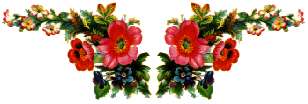

Poems and Art by Chandan Khandai

My Poem Gallery
[I wrote this poem for my Mom on Mother's Day, 1995]
Moms give you birth, They bring you to the earth, getting so much pain, forgiving again and again, always good, never bad, doesn't want to make you sad, They're always loving and caring, Tells to be kind and always sharing, We need to pay respect to mother, our goddess and lover, or we will never find the right track of life, to purify our body and mind.
[I wrote this poem on July 26, 1995]
Beautiful roses, ugly crows, could be switched, who's gonna know? Colorful peacocks, pale snakes, Isn't it wonderful what nature makes? Yes!
[Don't remember when I wrote this poem]
Earth, the Mother, Venus, the bad brother, Jupiter is not a wife, Mother Earth only supports life, If she didn't, we would smother, So we should not pollute our mother.
[Don't remember when I wrote this poem]
Dare to discover, I hope to recover, because I picked quartz. Shovel with no sound, 35 feet underground, and find a mineral quartz. Throw it up, high to a cup, but it has to be quartz. Has to be quartz, I am not gonna horse!
[Don't remember when I wrote this poem]
Part 1 Your shadow follow you everyday, a gentle breeze makes 100 pear trees blossom, and suit a human every waht way! Part 2 The sun shines a 100 towns a second, a moon lights a night's way, but both ripen a melon!
[Submitted to 1994-1995 National PTA Reflections Program]
I have a Dream for Justice and Peace on Earth,
Where Wisdom and Knowledge is worth.
Foolish and Evil is all away,
Truth and Bravery will stay.
Hunger and Illness is no where,
Rich and Poor will Share.
No one will be Mad,
And no one will be Sad.
Hills will have many Flowers,
From a very nice Spring Shower.
Cans, Wax, Bottles and Cones,
Are Recycled, even Bones.
The Smoke is all away,
And the Good Air will stay.
No Animals will be Killed,
And every Hurt will be Healed.
A New World with no Plague, War or Hunger!
With Peace, so serene it is the new World I see!
No Smoke, No Trash,
No Crime to Bash!
It is Truly the World I See!
[From my Journal]
Love is the Heart,
Affection, Caring,
Always is Sharing.
Love is a rose in bloom,
Beautiful, kind, and happy at sight,
Same as a robin in the sunlight.
Love is a peacock at noon,
Dancing in the rain and silver moon.
A dazzling lotus in the heart,
Love cannot be destroyed once it starts.
[From my Journal]
The night is blackness,
Where darkness lies,
and the silver moon in the sky,
where the lanterns glow,
and nightingales crow,
When the stars twinkle up high.
When the robbers loot,
and the Owls hoot,
When the people turn off the lights,
and the lamp posts are bright,
This is the NIGHT!
[From my Journal]
Nature's beauty can be,
a river swishing and swirling,
a group of robins chirping,
a lotus in bloom,
a group of roses at noon,
Butterflies with colorful wings,
all of these are Nature's things,
How beautiful can the World be?
[From my Journal]
The sea is very lovely,
With coral and anemones,
starfish, crabs, and sharks,
jellyfish, whales, also carp.
With gentle waves,
and octopus caves,
with beautiful shells,
and green, delicate kelp.
The sea is a lovely place to be!
[From my Journal]
The Earth, is worth, a giant diamond, of silver oceans, and green forests, Laden with apples, pears, pomengrates, peaches, and almonds, Beautiful birds, good fish, and animals Inhabit this world, Of jungles laid like quilts, and beautiful mountains God has built, This is the World, Known as the Earth.
[From my Journal]
Birds are wonderful,
They spread their wings and soar,
all over the whole world,
Beautiful, soft feathers,
They live in every weather,
Nightingales crow,
Cardinals sing,
Ducks quack,
Break their eggs with a crack,
What wonderful things can a bird do?
[From my Journal]
Trees have branches
which contain leaves,
and fruit the tiny twigs heave,
The birds come in and sing and call,
Return in the spring,
and go in the fall,
The bark is strong like thick leather,
The roots sink down and look for water,
Wasps live there, and so do bees,
How wonderful is a tree!
[From my Journal]
We are a family,
Papa, Mama, sister, brother,
Love, care, and help each other,
and live together in harmony.
The kids help their parents, as they should,
They clean their rooms, don't argue, and be good,
Parents help their children, by giving them stuff,
Comfort them, help them, and give love,
This is a family, mama, papa, sister, brother,
Understand and love each other.
[From my Journal]
Roses are beautiful,
Their petals are delicate ones,
Come in red, pink, yellow, and crimson.
They are lovely when they bloom,
On spiky vines they loom,
They are like God's boon.
Also, shining in the moon,
In stories they are enchantful,
Roses are really beautiful!
[From my Journal]
Truth is beautiful,
By its brother Lie,
Makes you comfortable
like the breeze in the sky.
Truth is good,
makes you have a nice mood.
Truth is Faith and Trust,
and it's very precious,
So don't tell lies again and again,
Because Faith and Trust
can't be put together,
Once they are broken.
[From my Journal]
Nature is an owl at night,
a rose in bloom,
or a dove in flight.
Nature is a wondrous place,
with trees, animals, fish,
Birds, insects, flowers, and snakes.
Nature is a meadow
With flowers, animals, and butterflies,
and grass like a green pillow.
Nature is a crystal lake,
with frogs, swans, and fish,
a beautiful thing God has made.
Nature was made by God,
our creator and father,
Who showers us with life and Love.
[From my Journal]
Whales are wondrous, They are the hugest thing in the sea, as big as BIG can be! They eat things from fish to krill, Has a blowhole, not two Gills! They can't breathe underwater, Not born from eggs, but their mothers! Slippery fins and floppy tail, This is truly a real WHALE!


| This Page Has Been Accessed | Times Since |
|---|
was last updated on :